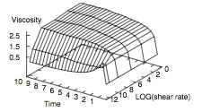
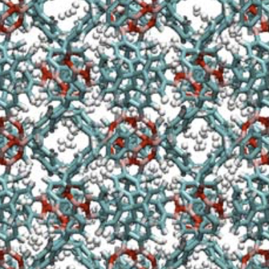

Molecular Simulation of NonEquilibrium Processes
The MSNEP Group
Molecular Simulation of NonEquilibrium Processes
The MSNEP (Molecular Simulation of NonEquilibrium Processes) group focuses on elucidating the self-organization an communication processes that take place in a wide range of processes. This is achieved by developing novel computational chemistry algorithms to analyze, and rationalize, the colective response and emergence in molecular and active matter, In particular, the algorithms we have developed are based on statistical methods (Monte Carlo and molecular dynamics) and cover multiple timescales and length scales (tight-binding level, classical force fields, coarse-grained models, Brownian dynamics, continuum and Machine Learning techniques). To unravel nonequilibrium pathways, we have designed enhanced sampling algorithms that shed light on relaxation pathways (Expanded Wang-Landau sampling, order parameter-based sampling and ML-guided exploration), and nonequilibrium molecular or Brownian dynamics schemes for field-driven systems and active matter. Key phenomena we have recently focused on include: (i) nucleation, growth, polymorph selection and phase transitions, (ii) aggregaton processes in soft matter and living systems, (iii) field-induced pattern formation and fluctuation theorem, and (iv) cooperative and emergent behavior in active matter.
Energy-Efficient Self-Organization and Swarm Behavior in Active Matter

Living systems have the unique ability to form hierarchical assemblies, in which individual constituents can perform tasks cooperatively and emergently. For instance, in Nature, birds may fly in flocks and develop emergent behaviors that result in complex motions and interactions. Similarly, bacteria are active particles that can form assemblies such as bacterial biofilms that are known to play a major role in certain forms of cancer. Harnessing such properties is a long-standing challenge for the rational design of dynamic materials, that can respond to their environment, communicate with one another, and undergo a rapid, reversible, assembly through the transduction of energy. Recent developments in the design of smart and active colloidal building blocks have led to tremendous breakthroughs, with, for instance, the onset of synthetic photoactivated active assemblies known as “living crystals” that can form, break, explode and re-form elsewhere. In this work, we develop a combined experimental, computational, theoretical and Machine Learning framework to shed light on the physical underpinnings of such assembly processes and program the assembly of smart active materials.
This research is funded by the DOE through DE-SC0020976. Collaborators: Paul Chaikin (NYU), Stefano Sacanna (NYU) and Mark Tuckerman (NYU).
Topology, Rare-event Simulation, and Machine Learning as Routes to Predicting Molecular Crystal Structures

Ordered arrays of molecules forming structures known as molecular crystals play an essential role in the pharmaceutical, agrochemical, electronics, and defense industries. In many instances, a given chemical compound may have more than one crystal structure, a phenomenon known as polymorphism. A crystal may also contain impurities, the most important among these being water. Such structures are referred to as crystal hydrates. The ability of these materials to function in a desired manner may depend on which structure, pure or impure, they form. If a well-engineered molecular crystal converts to another form or if it absorbs impurities over time, its performance may be seriously degraded. Such transformations can, for example, cause drugs to fail or insecticides to lose their potency. On the other hand, polymorphism and hydrate formation in molecular crystals are features that can be exploited to enhance the performance of these material. Utilizing advances in high-performance computing and artificial intelligence, we create new computational approaches and software components for rapidly predicting polymorphic structures in molecular crystals and understanding the transitions between structures.
This research is funded by the NSF through CHE-1955403. Collaborator: Mark Tuckerman (NYU).
Unraveling the interplay between thermodynamics and kinetics during the nucleation and growth of nanoparticles.

Because of their size, intermediate between the dimensions of atoms and of bulk matter, nanoscale materials often exhibit very unique properties. One needs, however, to be able to control the properties of nanomaterials, such as e.g. their crystalline structure, to fully harness the powerful properties of these materials. While physicists and synthetic chemists have developed many successful strategies to this end, a complete understanding of the molecular mechanisms underlying the formation of nanomaterials has remained elusive so far. The aim of our work is two-fold. Our first goal is to elucidate these mechanisms. For this purpose, we use simulation methods appropriate for the sampling of rare events (umbrella sampling, transition path sampling methods) to simulate the crystal nucleation process. Once the critical nucleus is obtained, we simulate its growth using conventional molecular dynamics simulations. Throughout nucleation and growth, using, and developing, when necessary, appropriate order parameters, we identify how and when the selection of a specific crystalline structure (or polymorph) takes place.
This research was funded by NSF CAREER Award through DMR-1052808. Collaborator: Lian Yu (UW-Madison), Bruce Garetz (NYU-Poly).
Far-from-equilibrium response in microscopic systems: complex fluids rheology & second law violations at the nanoscale

Statistical mechanics and thermodynamics have been instrumental in accounting for the properties of systems under equilibrium conditions. However, a complete analysis for the behavior of nonequilibrium systems still remains elusive. In recent years, key theoretical, computational and experimental advances have recently led to novel insights into the response of systems driven out-of-equilibrium, such as, e.g., the violations of the second law that can take place in small systems over short periods of time. In this work, we develop new NonEquilibrium Molecular Dynamics (NEMD) algorithms to compute the properties of nonequilibrium systems, including their transport coefficients and the corresponding generalized entropy production rates. These new simulation methods, based on the transient-time correlation function formalism, allow us to shed light, for instance, on these properties at experimentally accessible shear rates both for a variety of materials, including complex fluids, molecular systems and nanoconfined systems.
This research was funded by ACS PRF through #44997-G10
Adsorption, storage and separation in nanoporous materials.

Nanoporous materials, including Metal Organic Frameworks (MOFs) and Covalent Organic Frameworks (COFs), have emerged in recent years as incredibly potent materials for the adsorption, storage and separation of molecular fluids. Such systems have applications in energy storage (methane or hydrogen storage for automotive applications), in environmental applications (carbon capture and sequestration, or the capture of environmental contaminants like PAHs) and in mixture separations (for instance, for the separation of light alkanes ofr automotive applications). We have developed a new simulation method, known as Expanded Wang-Landau simulations, that carries out an extensive sampling of the configuration space and allows to obtain the partition function of nanoconfined fluids. Combined with Machine Learning techniques, this method enables the rapid prediction of thermodynamic properties of adsorption for a wide range of gases and multicomponent mixtures.
This research was funded by ACS PRF through #54802-ND10 & ExxonMobil